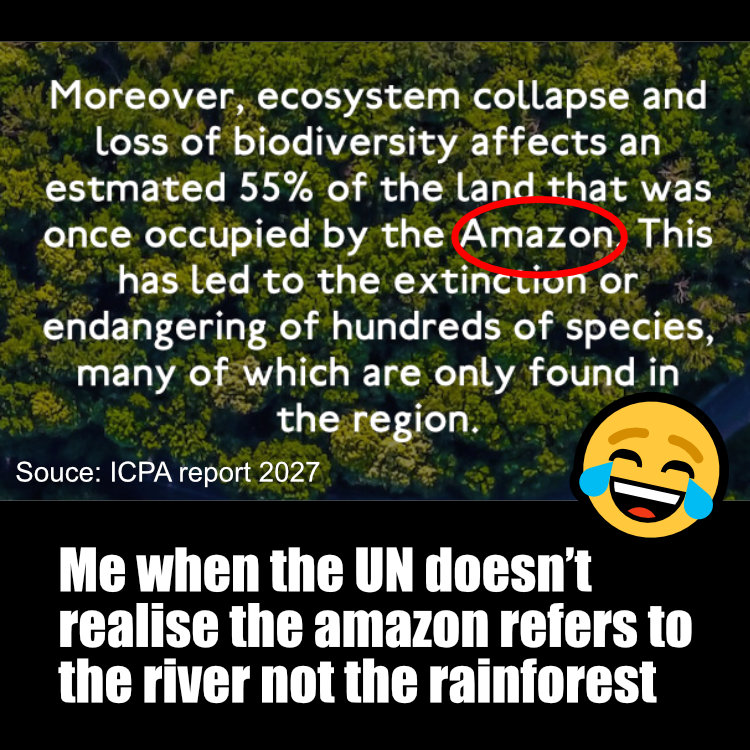

A tale of the world's worst ad campaign
By Jospeh Dross
Congratulations, fuckers, we did it. The Amazon's now so dead it needs a rebranding, and the internet is dancing around the flames. It would be sad, if our reactions weren't so predictable. I guess it's going to be a short post today.
If you didn't read the most recent UN ICPA report, it basically tells us this: the Amazon is really, really screwed. Luckily, they gave us an sdoc (god I hate that format name, just call them one-file websites) that explains:
65% of the Amazon's territory remains compared to 1970
Rewilding has claimed 2% of this territory
55% of the Amazon is affected by "ecosystem collapse and loss of diversity"
100+ indigenous activists have been arrested or killed
Notice anything? That's right, you can't, because these numbers were chosen by a fucking intern doing the minimum neccessary work. Let's break it down with your local historical materialist.
Look at how your average skim-reader would consider this sdoc: with the first fact, I think "wow, 65% of the Amazon is gone" (because, remember, people only look at the helpful number in red), followed by "wait, now it's 55%?" when you hit fact 2. But if you actually read the ICPA report (which, let's be honest, you didn't), it says that 35% of the Amazon's territory has been lost to deforestation compared to its size in 1970, a new high. An additional 20% of the land is considered "in danger" because of the aforementioned "ecosystem collapse and loss of diversity". What's actually happening is that you have to do some quick math and reading comprehension to figure out that the first number is unaffected land (100-65), and the second number is total affected land (35+20). Which, in my book, is truly horrible public communication.
And lest you think I'm merely quibbling, the math terror goes deeper. We've figured out that 35% of the Amazon is lost and 55% is affected. Do the areas overlap, meaning a little over half the Amazon is toast, or is it 35+55 = RIP 90% of the Amazon? You'd never know, unless you accessed the publicly available, honestly pretty well written document. Now, who do we blame for this crock of shit?
The company responsible for this travesty of a marketing document is none other than our favourite signal diffusers, NowAware Engagement plc. Despite their truly dismal track record (see: the UN Refugees are People Too Campaign, which is just... the name tells you everything you need to know) keep getting these damn contracts. Who knows, maybe it has something to do with the fact that NowAware's CEO was a former UN official. I just... have... no... fucking... idea.
Meanwhile, the murderous despots at the Illiberal coalition spend their money cranking out viral crap like this:

Image courtesy of our friends at Organic Goods, who consistently demonstrate both a complete lack of morals and a complete lack of opsec, because the meme is on their "Previous Work" page.
And, of course, the internet keeps eating it up. I'm fucking done with this.